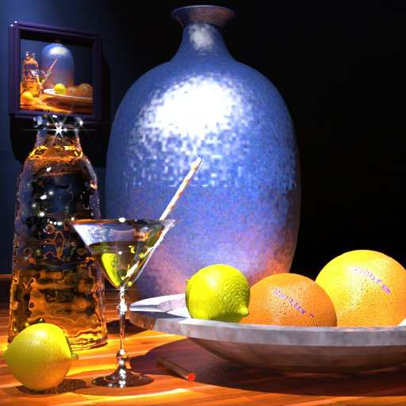

FOKOU Vanessa Laure
Yaounde-Anguissa
vanfokou@gmail.com

Parcours
- De 2002 a 2008 Enseignement Primaire
- De 2009 a 2016 Enseignement Secondaire
- De 2016 a 2018 Premier Cycle Universitaire
- 2019/2020 Second Cycle Universitaire
Competences
- Connaissance en traitement de texte, tableur, publipostage, présentation
- Rédaction d’article Web
- Connaissances des langages de programmation : Python, R....
Potentiels
- Faculté d’adaptation dans toutes activités
- Intègre et décisive
- Faculté de communication et d’insertion en milieu social
- Trevail en equipe
Loisirs
- Lecture des documents sur le develeoppement personnel
- recherche de nouvelles compétences dans le domaine du ML
- Sport